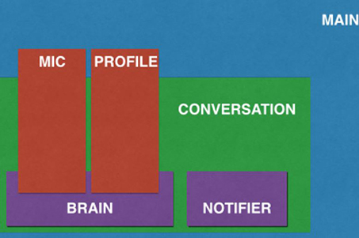
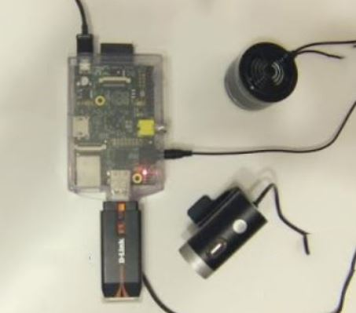
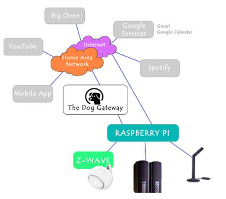

The Smart Butler project aims to create a system able to substitute a human butler in a domestic environment!
It will help the user to manage his/her daily routine,
relieving the customer from boring tasks and letting people enjoy life with more energy!
Based on vocal commands and users’ agenda,
Alfred will be able to recognize the activities that the user is going to performe, thanks to a transparent network of sensors.
It has different kinds of funcionalities: mail notification, agenda and event's notification, music settings, environment settings and regulations,
time settings and alarm, cooking recepits dictation and news reading.
It also has some built-in functionalities such as cooking mode and training mode. With those two functions, Alfred is able
to run more than one simple functionality together, making the user as confortable as possible to performe his/her tasks (setting the lights and environment in customable way,
turning the music on or helping the user to get fit with the proper training, etc.).
Alfred will always be present, ready to help the user whenever he/she need it, making his/her life simpler and easier,
simply by calling it by name, "Alfred"!

The project has been developed in Phyton, with the help of some open source libraries.
Pocketsphinx performs speech recognition via Python bindings to the CMUSphinx engine.
Alfred’s voice is owned by the popular TTS program, eSpeak. Phonetisaurus and CMUCLMTK enable Alfred
to generate dictionaries and language models on-the-fly based on the custom module vocabularies.
Mopidy enables streaming from Spotify, for those users who wish to use the module.
The client architecture is organized into six different components.
Main is the main process of Alfred. It set and creates mic, profile, and conversation instances. Subsequently,
the conversation instance is passed to the mic and profile as inputs, from which it creates a notifier and a brain.
The brain receives the mic and profile from the main and loads all the interactive components into memory.
The brain is essentially the interface between developer-written modules and the core framework.
Each module implements two functions:
In addition to the above functions, a list of defined words helps Alfred to understand if it is the right module to execute or not.
To learn more about how Alfred's interactive modules work and how to write your own, check out the API guide.
Alfred is designed for the Raspberry Pi (Model B) and requires some additional hardware to work. The suggested hardware is listed below:
The Raspberry Pi Verified Peripherals List may be helpful to find substitutes for the products recommended above.

The assembly of the required components is simple and straightforward.
The user only need to insert the microphone, SD card, wireless adapter (if any),
ethernet cable, and speakers into the Raspberry Pi. The USB wall charging adapter is recommended to power Alfred as a standalone device.
The ethernet cable will be used to log into the Raspberry Pi from a computer during the software installation step.
If after the installation the user prefers to use a wireless connection, this cable can be removed.
In fact, Alfred runs just fine on a wired connection (via ethernet),
so the user can choose between the two setups depending on what works best for him/her.

Different services as Youtube, Spotify, Big Oven's, Google's services are integrated in the system
through the Dog Gateway, in order to use the proper API and perform the various tasks in the proper and most efficient way.
If you want to know more about the Alfred project, check out
this link.